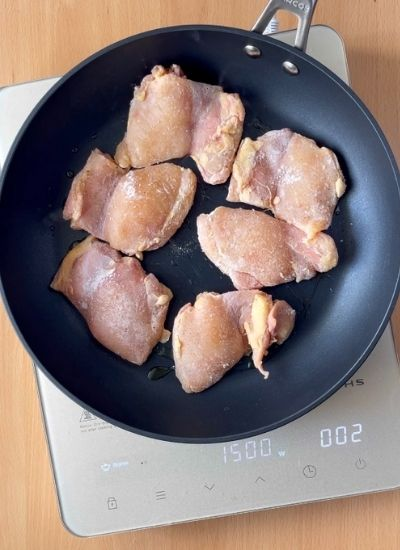
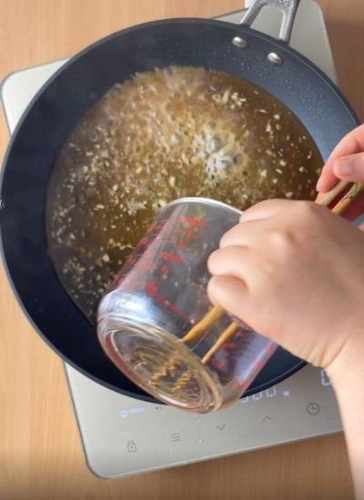
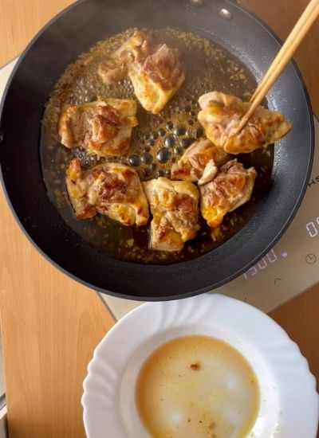
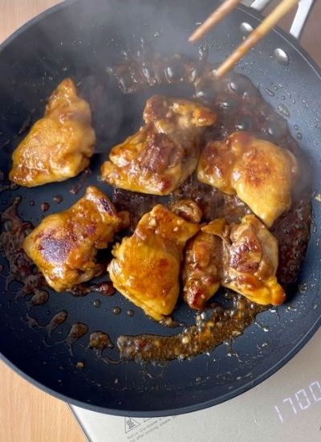
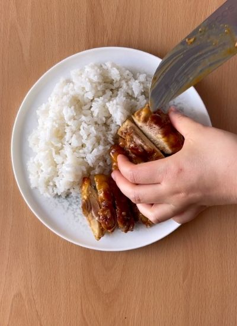
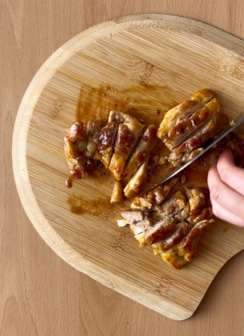

Principales · Japonesa
← Recetas
Pollo Teriyaki con Arroz

Preparación
- Cuece el arroz blanco para acompañar el pollo teriyaki.
- Salpimienta el pollo, añade las 2 cucharadas de harina y mézclalo bien.
- Dora el pollo a fuego medio unos 4 minutos por cada lado y retíralo.

- Prepara la salsa mezclando: 50 mL de salsa de soja, 3 cucharadas de miel, los 2 ajos picados, 1 cucharada de vinagre y 1/2 vaso de agua.

- Hierve la salsa unos 5 minutos a fuego medio.
- Añade el pollo y sube el fuego.

- Espera a que la salsa se espese (3-4 minutos).

- Corta el pollo y sírvelo junto al arroz.

Galería
